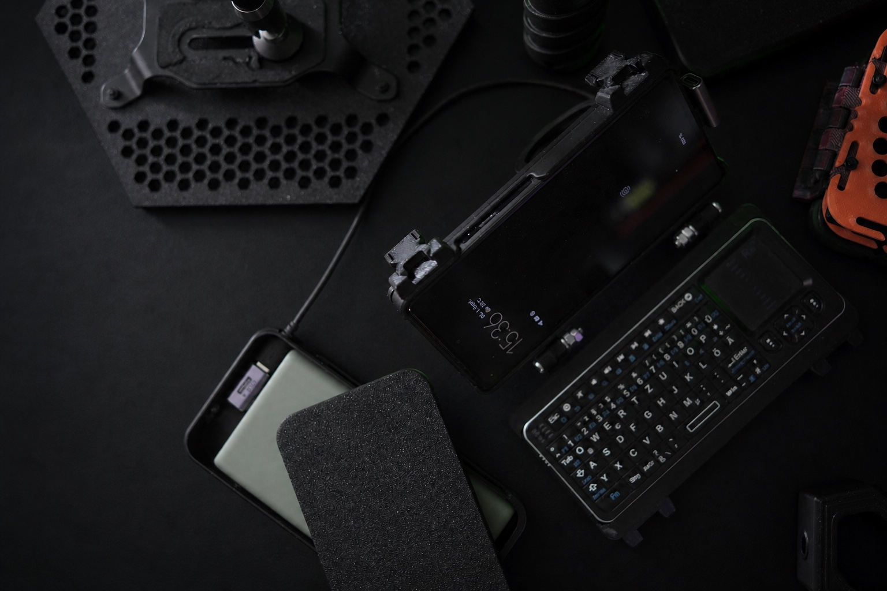

Hardware
Die Stückliste zeigt nicht nur Produkte, sondern ihren Zweck im System: Ein gebrauchtes Pixel 6a betreibt die Runtime, die Rii K06 liefert Eingabe und Touchpad.
Pixel 6a · 45 €
128 GB Speicher und 6 GB RAM für Termux, PRoot-Ubuntu, Gateway und Agent Runtime – ohne Root.
Rii K06 + Touchpad
Kompakte Eingabe für Terminal, Kontrolle und direkte Rückmeldung am Deck.
Mobile Versorgung
Die Energieversorgung ist auf einen nutzbaren, mobilen Dauerbetrieb und einen sauberen Shutdown ausgelegt.
WLAN & Bluetooth
Netzwerkzugriff für Tools und lokale Geräte; die Runtime bleibt dabei auf dem mobilen Knoten.

Input + Mobile Node // Field KitRii K06 +
Pixel 6a
Ein gebrauchtes Pixel 6a betreibt im Termux-Umfeld einen Hermes-Agenten. Die Rii K06 bildet die kompakte Bedienebene mit Tastatur und Touchpad.
- Input
- Rii K06
- Storage
- 128 GB
- Memory
- 6 GB RAM